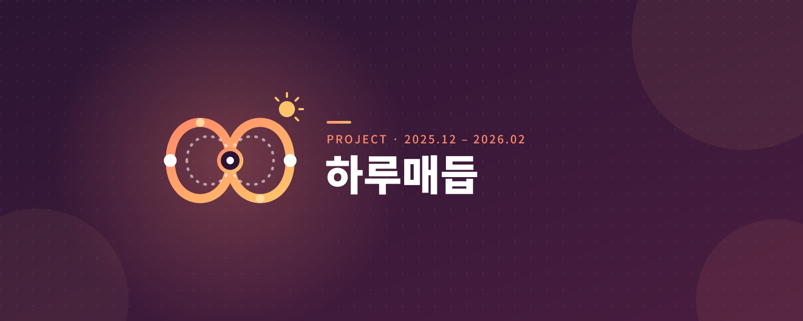

하루매듭 — AI 기반 초기 치매 환자 케어 플랫폼
2025.12 – 2026.02 · 비트교육 고급과정 팀 프로젝트

프로젝트 간단 설명
비트교육 고급과정 팀 프로젝트로 만든 AI 기반 초기 치매 환자 케어 플랫폼입니다. 치매 환자의 기억 회상을 돕고 보이스피싱·스미싱·실종 위험을 탐지합니다. 환자 개인 기억을 활용하는 RAG, 사진·영상 분석, 통화·문자 위험 탐지를 하나의 비동기 파이프라인으로 구성했습니다.
주 시도들
- 고용량 사진·영상과 음성 통화 데이터를 비동기로 처리하기 위해, PM으로서 기존 단일 서버 구조를 GCP Cloud Run, Eventarc, Firestore 기반 이벤트 중심 서버리스 아키텍처로 전환했습니다.
- 가족 관계·일상 기록을 검색하는 RAG 기억 회상 엔진과 환각 방지 가드레일을 구현했습니다.
- 룰 기반 필터와 Gemini 문맥 추론을 결합해 문자·통화 위험도를 분석하고 민감정보를 익명화했습니다.
기술 및 리소스
- Python, FastAPI, Google Gemini API, RAG
- Firebase Firestore, GCP Cloud Run, Eventarc, Cloud Storage, IAM
- Jira, Notion, Swagger / OpenAPI
담당 역할
- Project Manager · AI System / Backend Lead
- 요구사항 정의, 스프린트·마일스톤·릴리즈 관리
- AI 파이프라인과 백엔드 아키텍처 설계 및 구현
성과
- 고용량 미디어 분석을 비동기 처리하는 구조를 설계했습니다. 기존 문서의 200ms 응답 수치는 측정 로그가 없어 확정 성과에서 제외했습니다.
- 검색 유사도가 낮으면 안전 응답으로 전환해 근거 없는 기억 생성을 방지했습니다.
- 미등록 번호 익명화와 로그 마스킹으로 민감정보 노출 위험을 낮췄습니다.
시스템 구조와 기술적 의사결정
- Client와 Firestore의 실시간 동기화, Eventarc 트리거, Cloud Run의 AI 처리 계층을 분리해 긴 작업이 모바일 UI를 막지 않도록 설계했습니다.
- RAG 검색 결과가 기준치에 미달하면 생성 모델이 추측하지 않고 안전 문구로 종료하도록 했습니다.
- 문자 위험 탐지는 정규표현식·악성 URL·의심 키워드 기반 1차 필터와 Gemini 문맥 분석 2차 판단으로 구성했습니다.
검증과 개선 방향
- 실제 지연 시간, 기억 응답 품질, 위험 탐지 정확도는 평가 자료와 함께 검증해야 합니다.
- 실제 운영에서는 위험도 임계값별 오탐·미탐 측정, 보호자 알림 피로도 분석, 감사 로그와 데이터 보존 정책 보강이 필요합니다.
트러블슈팅 — GCP 권한·배포 환경
- 팀 전원이 GCP를 처음 사용해 팀원별 접근 권한 차이, 서비스 계정 키 발급, Eventarc 트리거 연동 시 IAM 역할 충돌, Cloud Storage 버킷 권한, API 할당량 제한 문제가 겹쳤습니다.
- 최소 권한 원칙과 IAM 역할 체계를 공식 문서로 확인한 뒤, 프론트엔드·AI·백엔드 담당 업무별 필요 권한을 매트릭스로 정리해 서비스 계정과 팀원 권한을 다시 부여했습니다.
- 발생한 오류와 해결 절차를 Notion 트러블슈팅 매뉴얼로 정리하고, 데일리 스크럼에서 배포 상태 변경을 공유했습니다.